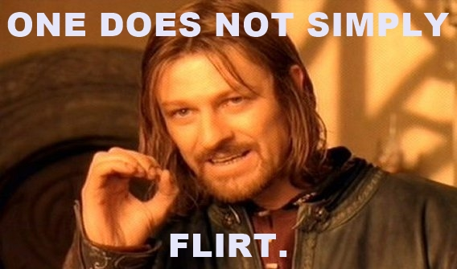

BE YOURSELF
Make a little pause before talking/writing and think - do you really want to say that racist bad joke? Do you really want to start talking about your job? Is it worth talking about politics? About your ex? Instead just simply take a pause and express how you feel. It´s a nice way of saying that you’re having a great time!
Three times, actually. The rule of three is used in screenplays. It’s so the audience knows to pay attention (because it takes most people three times to actually get it). Well, same is true with flirting. The Target (grrrr) needs to be reassured that you are actually trying to connect with them.
This is a hard one, especially for us who necessarily are not often being vulberable. Vulnerable does not mean you’re a door mat. It’s just you opening up in an attempt to see if the target (grrr) will feel safe enough to open up too. And when it comes to flirting, a slight show of vulnerability is vital.
BE A JERK
This should be common sense, but just in case: think twice before touching the nuts or the watermelons of your date. It is NOT a good idea to grab the buns of your date when you are in the flirting stage.
We all love animals, they are even tasty right? And despite the fact that some people eat them... we do love talking about them, it’s a safe place. But if you hear yourself getting caught in a loop talking about your pet “wearing costumes” - just change the subject. Ask about which animal your date would be in their next life, or about a meaningful documentary they recently watched.
Don’t even ask if you can touch their hair. The whole idea is wrong, just imagine how it would sound: “Can I touch your (here the victim is panicking...) hair?”. Usually people use a lot of stuff for their hair - products for dandruff, alopecia or lice. Shhhts! Don’t touch it!